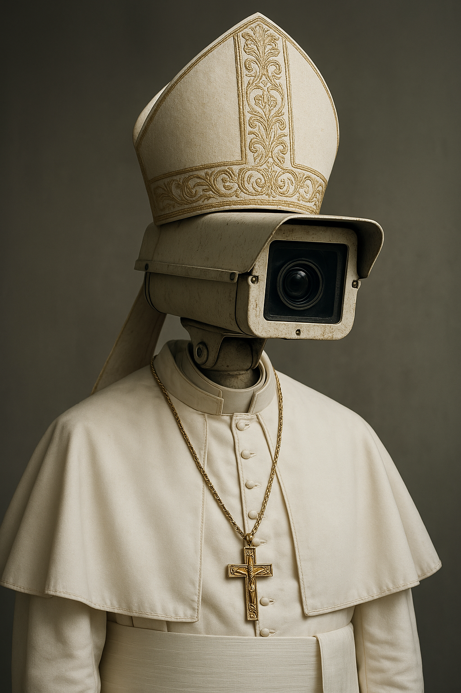

Padre Nuestro que estás en los cielos, glitchificado sea tu nombre...
as you scroll, the prayer corrupts...
is it divine... or digital?
My mom used to tell me,
that God was always watching
I grew up feeling observed.
Padre nuestro
Who art in heaven,
I used to see myself in the mirror
And thought about god being on the other side
Santificado sea tu nombre;
Thy kingdom come;
I remember songs about getting high
I have a constant eye...
GOD is that you?
Hágase tu voluntad en la tierra como en el cielo.
Give us this day our daily bread;
Perdona nuestras ofensas,
As we forgive those who trespass against us;
No nos dejes caer en la tentación,
But deliver us from evil.
Amen, I used to say.
Please God don’t judge me when I go online
I just want to make my homework.
Then I start downloading and torrenting...
Empiezo a usar social media and then...
I see the other god: Google, yo te tecleo.
Then I like to post myself online.
The cameras are everywhere, why should I care?
There is always somebody watching.
Social media is us letting others see us through a personal lens.
Vamos dejando data, the digital footprint...
We accept cookies and find strange comfort in being seen.
Si lo sabe Dios que lo sepa el internet.
For even as we curate, display, and post,
It's the unseen moments that we cherish most.
So here I stand, with camera in my hand,
A deity of my own brand...
Forgive me father, I have sinned.
Amen.
Believe